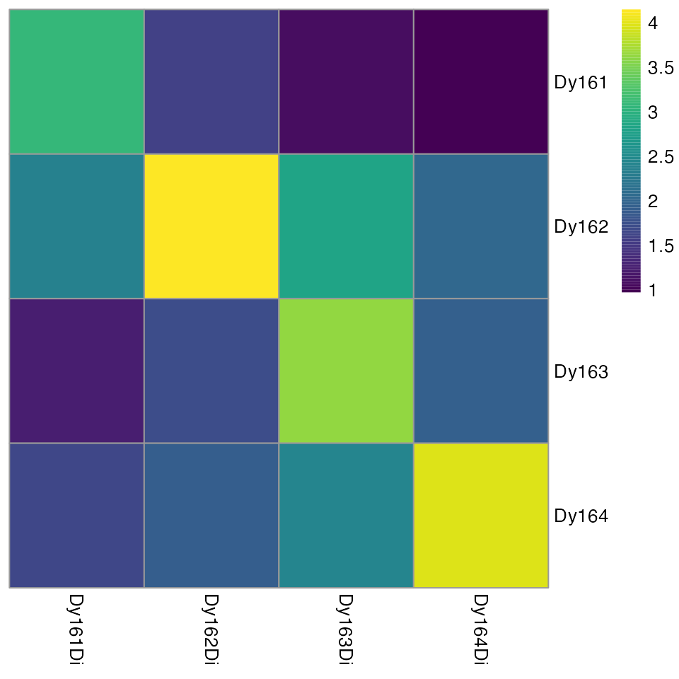
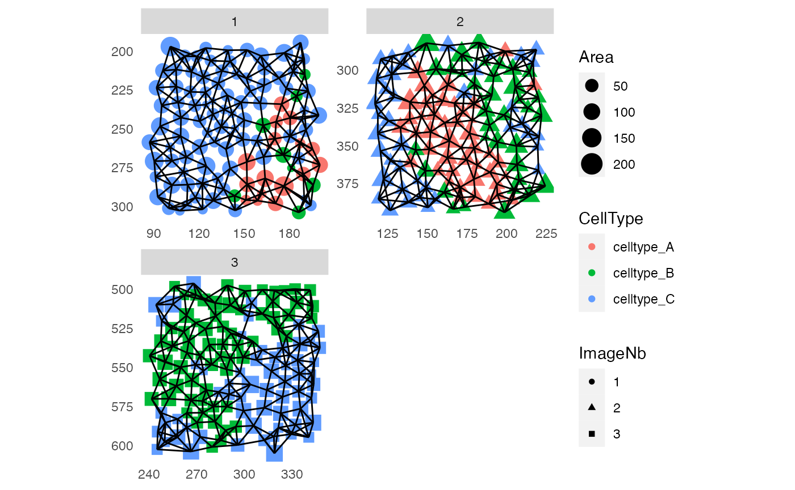
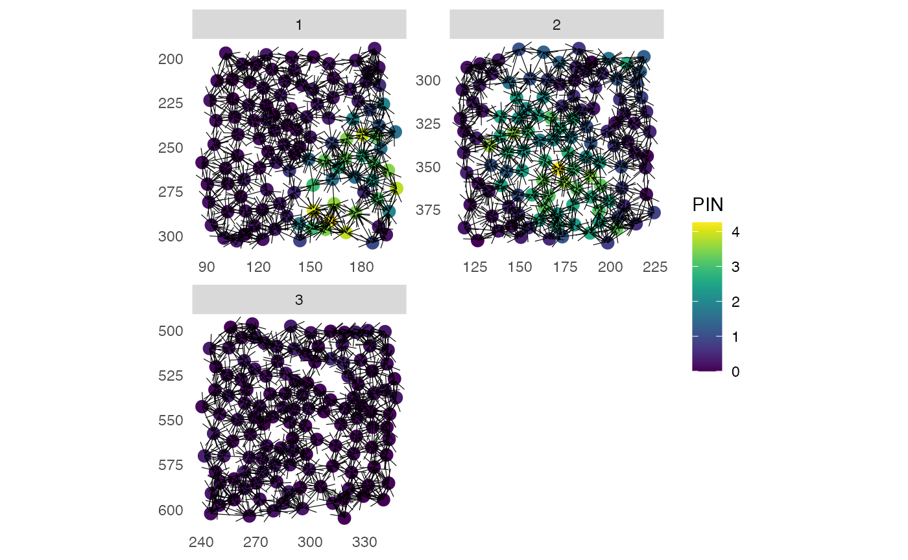
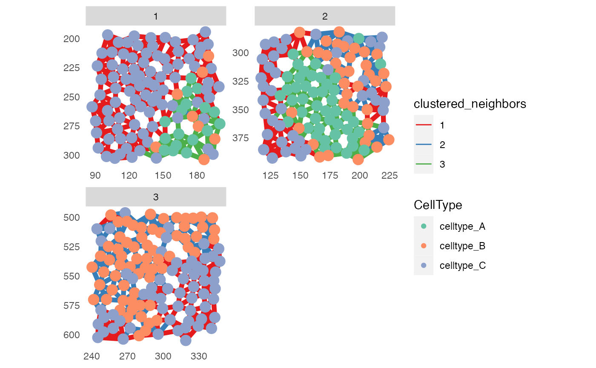

R tools for IMC data analysis
Nils Eling
Department for Quantitative Biomedicine, University of Zurichnils.eling@dqbm.uzh.ch
Tobias Hoch
Department for Quantitative Biomedicine, University of ZurichDaniel Schulz
Department for Quantitative Biomedicine, University of Zurich24 August 2021
Source:vignettes/imcRtools.Rmd
imcRtools.RmdAbstract
Abstract
Example data
The imcRtools package contains a number of example data generated by the Hyperion imaging system for different purposes. The following section gives an overview of these files.
For spillover correction
To highlight the use of the imcRtools package for spillover correction, we provide four .txt files containing pixel intensities of four spotted metals.
These files are accessible via:
path <- system.file("extdata/spillover", package = "imcRtools")
list.files(path, recursive = TRUE)## [1] "Dy161.txt" "Dy162.txt" "Dy163.txt" "Dy164.txt"Raw data in form of .txt files
To highlight reading in raw data in form of .txt files, the imcRtools contains 3 sample acquisitions:
txt_files <- list.files(system.file("extdata/mockData/raw",
package = "imcRtools"))
txt_files## [1] "20210305_NE_mockData2_ROI_001_1.txt" "20210305_NE_mockData2_ROI_002_2.txt"
## [3] "20210305_NE_mockData2_ROI_003_3.txt"
ImcSegmentationPipeline output data
IMC data preprocessing and segmentation can be performed using the ImcSegmentationPipeline. It generates a number of .csv files containing object/cell-specific and image-specific metadata.
The imcRtools package exports the read_cpout function as convenient reader for outpouts generated by the ImcSegmentationPipeline. For demonstration purposes, imcRtools contains the output of runnin the pipeline on a small example dataset:
path <- system.file("extdata/mockData/cpout", package = "imcRtools")
list.files(path, recursive = TRUE)## [1] "cell.csv" "Experiment.csv"
## [3] "Image.csv" "Object relationships.csv"
## [5] "panel.csv" "var_cell.csv"
## [7] "var_Image.csv"
steinbock output data
The steinbock pipeline can be used to process, segment and extract features from IMC data. For more information, please refer to the documentation.
To highlight the functionality of imcRtools to read in single-cell data generated by steinbock, we provide a small toy dataset available at:
path <- system.file("extdata/mockData/steinbock", package = "imcRtools")
list.files(path, recursive = TRUE)## [1] "cells.csv"
## [2] "graphs/20210305_NE_mockData1_1.csv"
## [3] "graphs/20210305_NE_mockData1_2.csv"
## [4] "graphs/20210305_NE_mockData1_3.csv"
## [5] "graphs/20210305_NE_mockData2_1.csv"
## [6] "graphs/20210305_NE_mockData2_2.csv"
## [7] "graphs/20210305_NE_mockData2_3.csv"
## [8] "graphs/20210305_NE_mockData3_1.csv"
## [9] "graphs/20210305_NE_mockData3_2.csv"
## [10] "graphs/20210305_NE_mockData3_3.csv"
## [11] "graphs/20210305_NE_mockData4_1.csv"
## [12] "graphs/20210305_NE_mockData4_2.csv"
## [13] "graphs/20210305_NE_mockData4_3.csv"
## [14] "graphs/20210305_NE_mockData5_1.csv"
## [15] "graphs/20210305_NE_mockData5_2.csv"
## [16] "graphs/20210305_NE_mockData5_3.csv"
## [17] "intensities.csv"
## [18] "intensities/20210305_NE_mockData1_1.csv"
## [19] "intensities/20210305_NE_mockData1_2.csv"
## [20] "intensities/20210305_NE_mockData1_3.csv"
## [21] "intensities/20210305_NE_mockData2_1.csv"
## [22] "intensities/20210305_NE_mockData2_2.csv"
## [23] "intensities/20210305_NE_mockData2_3.csv"
## [24] "intensities/20210305_NE_mockData3_1.csv"
## [25] "intensities/20210305_NE_mockData3_2.csv"
## [26] "intensities/20210305_NE_mockData3_3.csv"
## [27] "intensities/20210305_NE_mockData4_1.csv"
## [28] "intensities/20210305_NE_mockData4_2.csv"
## [29] "intensities/20210305_NE_mockData4_3.csv"
## [30] "intensities/20210305_NE_mockData5_1.csv"
## [31] "intensities/20210305_NE_mockData5_2.csv"
## [32] "intensities/20210305_NE_mockData5_3.csv"
## [33] "panel.csv"
## [34] "regionprops.csv"
## [35] "regionprops/20210305_NE_mockData1_1.csv"
## [36] "regionprops/20210305_NE_mockData1_2.csv"
## [37] "regionprops/20210305_NE_mockData1_3.csv"
## [38] "regionprops/20210305_NE_mockData2_1.csv"
## [39] "regionprops/20210305_NE_mockData2_2.csv"
## [40] "regionprops/20210305_NE_mockData2_3.csv"
## [41] "regionprops/20210305_NE_mockData3_1.csv"
## [42] "regionprops/20210305_NE_mockData3_2.csv"
## [43] "regionprops/20210305_NE_mockData3_3.csv"
## [44] "regionprops/20210305_NE_mockData4_1.csv"
## [45] "regionprops/20210305_NE_mockData4_2.csv"
## [46] "regionprops/20210305_NE_mockData4_3.csv"
## [47] "regionprops/20210305_NE_mockData5_1.csv"
## [48] "regionprops/20210305_NE_mockData5_2.csv"
## [49] "regionprops/20210305_NE_mockData5_3.csv"
## [50] "steinbock.sh"Read in IMC data
The imcRtools package supports reading in data generated by the ImcSegmentationPipeline or steinbock pipeline.
To read in the outpout data into a SpatialExperiment or SingleCellExperiment, the imcRtools package exports the read_cpout function.
By default, the single-cell data is read into a SpatialExperiment object. Here, the extracted channel- and cell-specific intensities are stored in the counts(spe) slot. All morphological features are stored in colData(spe) and the spatial locations of the cells are stored in spatialCoords(spe). The interaction graph is stored in colPair(spe, "neighbourhood").
Alternatively, the data can be read into a SingleCellExperiment object. The only difference is the lack of spatialCoords(sce). Here, the spatial coordinates are stored in colData(spe)$Pos_X and colData(spe)$Pos_Y.
Read in CellProfiler output
The ImcSegmentationPipeline produces a number of output file. By default, all single-cell features are measured and exported. To select the features of interest, the imcRtools package provides the show_cpout_features function. Here, the exported features can be interactively browsed:
path <- system.file("extdata/mockData/cpout", package = "imcRtools")
show_cpout_features(path)By default, read_cpout will read in the mean intensity per channel and cell from “hot pixel†filtered image stacks specified via intensities = "Intensity_MeanIntensity_FullStackFiltered":
cur_path <- system.file("extdata/mockData/cpout", package = "imcRtools")
# Read as SpatialExperiment
(spe <- read_cpout(cur_path))## class: SpatialExperiment
## dim: 5 219
## metadata(0):
## assays(1): counts
## rownames(5): Ag107 Pr141 Sm147 Eu153 Yb172
## rowData names(5): Tube.Number Metal.Tag Target ilastik full
## colnames: NULL
## colData names(6): sample_id ObjectNumber ... Metadata_acid
## Metadata_description
## reducedDimNames(0):
## mainExpName: NULL
## altExpNames(0):
## spatialData names(0) :
## spatialCoords names(2) : Pos_X Pos_Y
## imgData names(1): sample_id
# Read as SingleCellExperiment
(sce <- read_cpout(cur_path, return_as = "sce"))## class: SingleCellExperiment
## dim: 5 219
## metadata(0):
## assays(1): counts
## rownames(5): Ag107 Pr141 Sm147 Eu153 Yb172
## rowData names(5): Tube.Number Metal.Tag Target ilastik full
## colnames: NULL
## colData names(8): sample_id ObjectNumber ... Metadata_acid
## Metadata_description
## reducedDimNames(0):
## mainExpName: NULL
## altExpNames(0):Read in steinbock output
Single-cell data and all associated metadata (e.g. spatial location, morphology and interaction graphs) as produced by the steinbock pipeline can be read in using the read_steinbock function:
cur_path <- system.file("extdata/mockData/steinbock", package = "imcRtools")
# Read as SpatialExperiment
(spe <- read_steinbock(cur_path))## class: SpatialExperiment
## dim: 5 215
## metadata(0):
## assays(1): counts
## rownames(5): Ag107 Cytokeratin 5 Laminin YBX1 H3K27Ac
## rowData names(6): channel name ... deepcell Tube.Number
## colnames: NULL
## colData names(6): sample_id ObjectNumber ... minor_axis_length
## eccentricity
## reducedDimNames(0):
## mainExpName: NULL
## altExpNames(0):
## spatialData names(0) :
## spatialCoords names(2) : Pos_X Pos_Y
## imgData names(1): sample_id
# Read as SingleCellExperiment
(sce <- read_steinbock(cur_path, return_as = "sce"))## class: SingleCellExperiment
## dim: 5 215
## metadata(0):
## assays(1): counts
## rownames(5): Ag107 Cytokeratin 5 Laminin YBX1 H3K27Ac
## rowData names(6): channel name ... deepcell Tube.Number
## colnames: NULL
## colData names(8): sample_id ObjectNumber ... minor_axis_length
## eccentricity
## reducedDimNames(0):
## mainExpName: NULL
## altExpNames(0):For more information on the read_steinbock function, please refer to ?read_steinbock.
Read raw .txt files into Image objects
For reading in and visualization of multi-channel images and segmentation masks, please refer to the cytomapper package. The imcRtools package however supports reading in raw .txt files generated by the Hyperion imaging system into a CytoImageList object; a data container exported by cytomapper.
The user needs to provide a path from which all .txt files will be read in:
path <- system.file("extdata/mockData/raw", package = "imcRtools")
cur_CytoImageList <- readImagefromTXT(path)
cur_CytoImageList## CytoImageList containing 3 image(s)
## names(3): 20210305_NE_mockData2_ROI_001_1 20210305_NE_mockData2_ROI_002_2 20210305_NE_mockData2_ROI_003_3
## Each image contains 5 channel(s)
## channelNames(5): Ag107Di Pr141Di Sm147Di Eu153Di Yb172DiSpillover correction for IMC data
When acquiring IMC images, pixel intensities can be influenced by spillover from neighbouring channels. To correct for this, Chevrier et al. have developed a staining protocol to acquire individually spotted metal isotopes (???). Based on these measurements, spillover into neighbouring channels can be quantified and pixel intensities can be deconvolved into true and spillover signal.
The imcRtools package provides helper functions that facilitate the correction of spillover for IMC data. For a full tutorial, please refer to the IMC data analysis book.
Read in the single-spot acquisition
In the first step, the pixel intensities of individually spotted metals need to be read into a SingleCellExperiment container for downstream use with the CATALYST package. For this, the readSCEfromTXT function can be used:
path <- system.file("extdata/spillover", package = "imcRtools")
sce <- readSCEfromTXT(path) ## Spotted channels: Dy161, Dy162, Dy163, Dy164
## Acquired channels: Dy161, Dy162, Dy163, Dy164
## Channels spotted but not acquired:
## Channels acquired but not spotted:
sce## class: SingleCellExperiment
## dim: 4 400
## metadata(0):
## assays(1): counts
## rownames(4): 161Dy(Dy161Di) 162Dy(Dy162Di) 163Dy(Dy163Di)
## 164Dy(Dy164Di)
## rowData names(2): channel_name marker_name
## colnames(400): Dy161.1 Dy161.2 ... Dy164.99 Dy164.100
## colData names(9): Start_push End_push ... sample_metal sample_mass
## reducedDimNames(0):
## mainExpName: NULL
## altExpNames(0):Here, the example metal spot files are read in. The spot information are stored in the colData(sce) slot and channel information are stored in rowData(sce). Each column represents a single pixel.
Quality control on single-spot acquisitions
In the next step, it is crucial to identify potential mislabeled spots or spots with low pixel intensities, the imcRtools package exports the plotSpotHeatmap function, which visualizes the aggregated (default median) pixel intensities per spot and per metal:
plotSpotHeatmap(sce)
Here, high median pixel intensities can be observed in each spot an their corresponding channels (visualized on the log10 scale). To quickly identify spot/channel combinations with low signal, the threshold parameter can be set:
plotSpotHeatmap(sce, log = FALSE, threshold = 200)
Consecutive pixel binning
If pixel intensities are low, spillover estimation might not be robust. Therefore, the binAcrossPixels function can be used to sum consecutive pixels and enhance the acquired signal. This step is optional for spillover estimation.
sce2 <- binAcrossPixels(sce, bin_size = 5)
plotSpotHeatmap(sce2, log = FALSE, threshold = 200)Pixel filtering
Prior to spillover estimation, the CATALYST package provides the assignPrelim, estCutoffs and applyCutoffs functions to estimate the spotted mass for each pixel based on their channel intensities. For more information on the spillover estimation and correction, please refer to the CATALYST vignette.
This estimation can be used to identify pixels that cannot be easily assigned to their spotted mass, potentially indicating pixels with weak signal. To remove these pixels, the filterPixels function can be used. This function further removes pixels assigned to masses, which only contain very few pixels.
library(CATALYST)
bc_key <- as.numeric(unique(sce$sample_mass))
assay(sce, "exprs") <- asinh(counts(sce)/5)
sce <- assignPrelim(sce, bc_key = bc_key)
sce <- estCutoffs(sce)
sce <- applyCutoffs(sce)
# Filter out mislabelled pixels
sce <- filterPixels(sce)
table(sce$bc_id, sce$sample_mass)##
## 161 162 163 164
## 0 0 0 0 2
## 161 100 0 0 0
## 162 0 100 0 0
## 163 0 0 100 0
## 164 0 0 0 98Estimating the spillover matrix
Finally, the pre-processed SiingleCellExperiment object can be used to generate the spillover matrix using the CATALYST::computeSpillmat function:
sce <- computeSpillmat(sce)
metadata(sce)$spillover_matrix## Dy161Di Dy162Di Dy163Di Dy164Di
## Dy161Di 1.000000000 0.031443129 0.009734712 0.006518048
## Dy162Di 0.015715159 1.000000000 0.048116187 0.008250039
## Dy163Di 0.003809504 0.012159704 1.000000000 0.020214651
## Dy164Di 0.005058069 0.008457546 0.028912343 1.000000000Spatial analysis
The following section will highlight functions for spatial analysis of the data.
Constructing graphs
When following the ImcSegmentationPipeline or steinbock, the generated graphs are automatically stored in the colPair(spe, "neighbourhood") slot. Alternatively, the buildSpatialGraph function in the imcRtools package constructs interaction graphs using either (i) cell-centroid expansion, (ii) k-nearest neighbor search or (iii) delaunay triangulation.
library(cytomapper)
data("pancreasSCE")
pancreasSCE <- buildSpatialGraph(pancreasSCE, img_id = "ImageNb",
type = "expansion",
threshold = 20)
pancreasSCE <- buildSpatialGraph(pancreasSCE, img_id = "ImageNb",
type = "knn",
k = 5)
pancreasSCE <- buildSpatialGraph(pancreasSCE, img_id = "ImageNb",
type = "delaunay")
colPairNames(pancreasSCE)## [1] "expansion_interaction_graph" "knn_interaction_graph"
## [3] "delaunay_interaction_graph"When setting type = "knn", by default a directional graph will be build. Setting directed = FALSE will create bi-directional edges for each pair of cells that are connected by at least one edge in the directed setting.
Graph/cell visualization
The cells’ locations and constructed graphs can be visualized using the plotSpatial function. Here, cells are referred to as “nodes†and cell-cell interactions are referred to as “edges”. All visual attributes of the nodes and edges can be set. Either by specifying a variable in colData(spe), a marker name or a single entry using the *_fix parameters.
library(ggplot2)
library(ggraph)
plotSpatial(pancreasSCE,
img_id = "ImageNb",
node_color_by = "CellType",
node_shape_by = "ImageNb",
node_size_by = "Area",
draw_edges = TRUE,
colPairName = "knn_interaction_graph",
directed = FALSE)
# Colored by expression and with arrows
plotSpatial(pancreasSCE,
img_id = "ImageNb",
node_color_by = "PIN",
assay_type = "exprs",
node_size_fix = 3,
edge_width_fix = 0.2,
draw_edges = TRUE,
colPairName = "knn_interaction_graph",
directed = TRUE,
arrow = grid::arrow(length = grid::unit(0.1, "inch")),
end_cap = ggraph::circle(0.05, "cm"))
# Subsetting the SingleCellExperiment
plotSpatial(pancreasSCE[,pancreasSCE$Pattern],
img_id = "ImageNb",
node_color_by = "CellType",
node_size_fix = 1,
draw_edges = TRUE,
colPairName = "knn_interaction_graph",
directed = TRUE,
scales = "fixed") 
The returned object can be further modified using the ggplot2 logic. This includes chaning the node color, shape and size using scale_color_*, scale_shape_* and scale_size_*. Edge attributes can be altered using the scale_edge_* exported by ggraph,
Neighborhood aggregation
The aggregatedNeighbors function can be used to aggregate features of all neighboring cells for each individual cell. This function operates in two settings. 1. metadata: when aggregating by cell-specific metadata, the function computes the relative frequencies of all entries to colData(sce)[[count_by]] within the direct neighborhood of each cell. 2. expression: the expression counts stored in assay_type are aggregated using the specified statistic (defaults to mean).
Each cell’s neighborhood is defined as endpoints of edges stored in colPair(sce, colPairName).
pancreasSCE <- aggregateNeighbors(pancreasSCE,
colPairName = "knn_interaction_graph",
aggregate_by = "metadata",
count_by = "CellType")
head(pancreasSCE$aggregatedNeighbors)## DataFrame with 6 rows and 3 columns
## celltype_A celltype_B celltype_C
## <numeric> <numeric> <numeric>
## 1 0 0.0 1.0
## 2 0 0.2 0.8
## 3 0 0.0 1.0
## 4 0 0.0 1.0
## 5 0 0.0 1.0
## 6 0 0.0 1.0
pancreasSCE <- aggregateNeighbors(pancreasSCE,
colPairName = "knn_interaction_graph",
aggregate_by = "expression",
assay_type = "exprs")
head(pancreasSCE$mean_aggregatedExpression)## DataFrame with 6 rows and 5 columns
## H3 CD99 PIN CD8a CDH
## <numeric> <numeric> <numeric> <numeric> <numeric>
## 1 2.32500 0.860329 0.092871 0.725000 2.51264
## 2 2.88022 1.629762 0.319527 0.207873 2.46486
## 3 3.10829 0.735389 0.190616 0.255515 1.89484
## 4 2.55842 0.773342 0.124545 0.188629 2.51084
## 5 2.44287 1.126240 0.252129 0.200261 2.61336
## 6 2.65059 0.903869 0.181792 0.196691 2.16434The returned entries can now be used for clustering to group cells based on their environment (either by aggregated categorial features or expression).
cur_cluster <- kmeans(pancreasSCE$aggregatedNeighbors, centers = 3)
pancreasSCE$clustered_neighbors <- factor(cur_cluster$cluster)
plotSpatial(pancreasSCE,
img_id = "ImageNb",
node_color_by = "CellType",
node_size_fix = 4,
edge_width_fix = 2,
edge_color_by = "clustered_neighbors",
draw_edges = TRUE,
colPairName = "knn_interaction_graph",
directed = FALSE,
nodes_first = FALSE) +
scale_color_brewer(palette = "Set2") +
scale_edge_color_brewer(palette = "Set1")
To exclude cells that are close to the image border, the imcRtools package exports the findBorderCells function.
pancreasSCE <- findBorderCells(pancreasSCE,
img_id = "ImageNb",
border_dist = 10)
plotSpatial(pancreasSCE[,!pancreasSCE$border_cells],
img_id = "ImageNb",
node_color_by = "CellType",
node_size_fix = 4,
edge_width_fix = 2,
edge_color_by = "clustered_neighbors",
draw_edges = TRUE,
colPairName = "knn_interaction_graph",
directed = FALSE,
nodes_first = FALSE) +
scale_color_brewer(palette = "Set2") +
scale_edge_color_brewer(palette = "Set1")
Neighborhood permutation testing
The following section describes how to observe and test the average number of interactions between cell labels (e.g. cell-types) within grouping levels (e.g. images). For full descriptions of the testing approaches, please refer to Shapiro et al., Nature Methods(Schapiro et al. 2017) and Schulz et al., Cell Systems (Schulz et al. 2018)
The imcRtools package exports the countInteractions and testInteractions function, which summarize all cell-cell interactions per grouping level (e.g. image). As a result, a table is returned where each row represents one of all possible cell-type/cell-type interactions among all grouping levels. Missing entries or NAs indicate missing cell-type labels for this grouping level. The next section gives details on how interactions are summarized.
Summarizing interactions
The countInteractions function counts the number of edges (interactions) between each set of unique cell labels per grouping level. Simplified, it counts for each cell of type A the number of neighbors of type B. This count is averaged within each unique grouping level (e.g. image) in three different ways:
method = "classic": The count is divided by the total number of cells of type A. The final count can be interpreted as “How many neighbors of type B does a cell of type A have on average?”method = "histocat": The count is divided by the number of cells of type A that have at least one neighbor of type B. The final count can be interpreted as “How many many neighbors of type B has a cell of type A on average, given it has at least one neighbor of type B?”method = "patch": For each cell, the count is binarized to 0 (less thanpatch_sizeneighbors of type B) or 1 (more or equal topatch_sizeneighbors of type B). The binarized counts are averaged across all cells of type A. The final count can be interpreted as “What fraction of cells of type A have at least a given number of neighbors of type B?”
The countInteractions returns a DataFrame containing the summarized counts (ct) for all combinations of from_label, to_label and group_by.
out <- countInteractions(pancreasSCE,
group_by = "ImageNb",
label = "CellType",
method = "classic",
colPairName = "knn_interaction_graph")
out## DataFrame with 24 rows and 4 columns
## group_by from_label to_label ct
## <integer> <character> <factor> <numeric>
## 1 1 celltype_A celltype_A 2.823529
## 2 1 celltype_A celltype_B 0.823529
## 3 1 celltype_A celltype_C 1.352941
## 4 1 celltype_B celltype_A 2.000000
## 5 1 celltype_B celltype_B 0.625000
## ... ... ... ... ...
## 20 3 celltype_B celltype_B 4.00000
## 21 3 celltype_B celltype_C 1.00000
## 22 3 celltype_C celltype_A NA
## 23 3 celltype_C celltype_B 1.13115
## 24 3 celltype_C celltype_C 3.86885Testing for significance
In the next instance, one can test if the obtained count is larger or smaller compared to what is expected from a random distribution of cell labels. For this, the testInteractions function permutes the cell labels iter times and counts interactions as described above. This approach generates a distribution of the interaction count under a random distribution of cell labels. The observed interaction count is compared against this Null distribution to derive empirical p-values:
p_gt: fraction of perturbations equal or greater than the observed count
p_lt: fraction of perturbations equal or less than the observed count
Based on these empirical p-values, the interaction score (attraction or avoidance), overall p value and significance by comparison to p_treshold (sig and sigval) are derived. All results are returned in form of a DataFrame.
out <- testInteractions(pancreasSCE,
group_by = "ImageNb",
label = "CellType",
method = "classic",
colPairName = "knn_interaction_graph")
out## DataFrame with 24 rows and 10 columns
## group_by from_label to_label ct p_gt p_lt
## <integer> <character> <factor> <numeric> <numeric> <numeric>
## 1 1 celltype_A celltype_A 2.823529 0.000999001 1.000000000
## 2 1 celltype_A celltype_B 0.823529 0.000999001 1.000000000
## 3 1 celltype_A celltype_C 1.352941 1.000000000 0.000999001
## 4 1 celltype_B celltype_A 2.000000 0.000999001 1.000000000
## 5 1 celltype_B celltype_B 0.625000 0.125874126 0.927072927
## ... ... ... ... ... ... ...
## 20 3 celltype_B celltype_B 4.00000 0.000999001 1.000000000
## 21 3 celltype_B celltype_C 1.00000 1.000000000 0.000999001
## 22 3 celltype_C celltype_A NA NA NA
## 23 3 celltype_C celltype_B 1.13115 1.000000000 0.000999001
## 24 3 celltype_C celltype_C 3.86885 0.000999001 1.000000000
## interaction p sig sigval
## <logical> <numeric> <logical> <numeric>
## 1 TRUE 0.000999001 TRUE 1
## 2 TRUE 0.000999001 TRUE 1
## 3 FALSE 0.000999001 TRUE -1
## 4 TRUE 0.000999001 TRUE 1
## 5 TRUE 0.125874126 FALSE 0
## ... ... ... ... ...
## 20 TRUE 0.000999001 TRUE 1
## 21 FALSE 0.000999001 TRUE -1
## 22 NA NA NA NA
## 23 FALSE 0.000999001 TRUE -1
## 24 TRUE 0.000999001 TRUE 1Session info
## R version 4.1.0 (2021-05-18)
## Platform: x86_64-apple-darwin17.0 (64-bit)
## Running under: macOS Catalina 10.15.7
##
## Matrix products: default
## BLAS: /Library/Frameworks/R.framework/Versions/4.1/Resources/lib/libRblas.dylib
## LAPACK: /Library/Frameworks/R.framework/Versions/4.1/Resources/lib/libRlapack.dylib
##
## locale:
## [1] en_US.UTF-8/en_US.UTF-8/en_US.UTF-8/C/en_US.UTF-8/en_US.UTF-8
##
## attached base packages:
## [1] parallel stats4 stats graphics grDevices utils datasets
## [8] methods base
##
## other attached packages:
## [1] ggraph_2.0.5 ggplot2_3.3.5
## [3] cytomapper_1.4.1 EBImage_4.34.0
## [5] CATALYST_1.16.2 imcRtools_0.3.11
## [7] SpatialExperiment_1.2.1 SingleCellExperiment_1.14.1
## [9] SummarizedExperiment_1.22.0 Biobase_2.52.0
## [11] GenomicRanges_1.44.0 GenomeInfoDb_1.28.1
## [13] IRanges_2.26.0 S4Vectors_0.30.0
## [15] BiocGenerics_0.38.0 MatrixGenerics_1.4.2
## [17] matrixStats_0.60.1 BiocStyle_2.20.2
##
## loaded via a namespace (and not attached):
## [1] scattermore_0.7 flowWorkspace_4.4.0
## [3] R.methodsS3_1.8.1 ragg_1.1.3
## [5] tidyr_1.1.3 bit64_4.0.5
## [7] knitr_1.33 irlba_2.3.3
## [9] multcomp_1.4-17 DelayedArray_0.18.0
## [11] R.utils_2.10.1 data.table_1.14.0
## [13] RCurl_1.98-1.4 doParallel_1.0.16
## [15] generics_0.1.0 flowCore_2.4.0
## [17] ScaledMatrix_1.0.0 TH.data_1.0-10
## [19] cowplot_1.1.1 ggpointdensity_0.1.0
## [21] bit_4.0.4 tzdb_0.1.2
## [23] xml2_1.3.2 httpuv_1.6.2
## [25] assertthat_0.2.1 viridis_0.6.1
## [27] xfun_0.25 hms_1.1.0
## [29] jquerylib_0.1.4 evaluate_0.14
## [31] promises_1.2.0.1 fansi_0.5.0
## [33] readxl_1.3.1 Rgraphviz_2.36.0
## [35] igraph_1.2.6 DBI_1.1.1
## [37] htmlwidgets_1.5.3 purrr_0.3.4
## [39] ellipsis_0.3.2 crosstalk_1.1.1
## [41] dplyr_1.0.7 ggcyto_1.20.0
## [43] ggnewscale_0.4.5 ggpubr_0.4.0
## [45] backports_1.2.1 cytolib_2.4.0
## [47] bookdown_0.23 svgPanZoom_0.3.4
## [49] RcppParallel_5.1.4 sparseMatrixStats_1.4.2
## [51] vctrs_0.3.8 Cairo_1.5-12.2
## [53] abind_1.4-5 withr_2.4.2
## [55] cachem_1.0.6 ggforce_0.3.3
## [57] aws.signature_0.6.0 vroom_1.5.4
## [59] svglite_2.0.0 cluster_2.1.2
## [61] crayon_1.4.1 drc_3.0-1
## [63] labeling_0.4.2 edgeR_3.34.0
## [65] pkgconfig_2.0.3 tweenr_1.0.2
## [67] vipor_0.4.5 rlang_0.4.11
## [69] lifecycle_1.0.0 sandwich_3.0-1
## [71] rsvd_1.0.5 cellranger_1.1.0
## [73] rprojroot_2.0.2 polyclip_1.10-0
## [75] graph_1.70.0 tiff_0.1-8
## [77] Matrix_1.3-3 raster_3.4-13
## [79] carData_3.0-4 zoo_1.8-9
## [81] Rhdf5lib_1.14.2 base64enc_0.1-3
## [83] beeswarm_0.4.0 RTriangle_1.6-0.10
## [85] ggridges_0.5.3 GlobalOptions_0.1.2
## [87] pheatmap_1.0.12 png_0.1-7
## [89] viridisLite_0.4.0 rjson_0.2.20
## [91] bitops_1.0-7 shinydashboard_0.7.1
## [93] R.oo_1.24.0 ConsensusClusterPlus_1.56.0
## [95] rhdf5filters_1.4.0 DelayedMatrixStats_1.14.2
## [97] shape_1.4.6 stringr_1.4.0
## [99] readr_2.0.1 jpeg_0.1-9
## [101] rstatix_0.7.0 ggsignif_0.6.2
## [103] aws.s3_0.3.21 beachmat_2.8.1
## [105] scales_1.1.1 memoise_2.0.0
## [107] magrittr_2.0.1 plyr_1.8.6
## [109] hexbin_1.28.2 zlibbioc_1.38.0
## [111] compiler_4.1.0 dqrng_0.3.0
## [113] RColorBrewer_1.1-2 plotrix_3.8-1
## [115] clue_0.3-59 cli_3.0.1
## [117] XVector_0.32.0 ncdfFlow_2.38.0
## [119] FlowSOM_2.0.0 MASS_7.3-54
## [121] tidyselect_1.1.1 stringi_1.7.3
## [123] forcats_0.5.1 RProtoBufLib_2.4.0
## [125] textshaping_0.3.5 highr_0.9
## [127] yaml_2.2.1 BiocSingular_1.8.1
## [129] locfit_1.5-9.4 latticeExtra_0.6-29
## [131] ggrepel_0.9.1 grid_4.1.0
## [133] sass_0.4.0 tools_4.1.0
## [135] rio_0.5.27 CytoML_2.4.0
## [137] circlize_0.4.13 foreach_1.5.1
## [139] foreign_0.8-81 gridExtra_2.3
## [141] farver_2.1.0 Rtsne_0.15
## [143] DropletUtils_1.12.2 digest_0.6.27
## [145] BiocManager_1.30.16 shiny_1.6.0
## [147] Rcpp_1.0.7 car_3.0-11
## [149] broom_0.7.9 scuttle_1.2.1
## [151] later_1.3.0 httr_1.4.2
## [153] ComplexHeatmap_2.8.0 colorspace_2.0-2
## [155] XML_3.99-0.7 fs_1.5.0
## [157] splines_4.1.0 RBGL_1.68.0
## [159] scater_1.20.1 pkgdown_1.6.1
## [161] graphlayouts_0.7.1 sp_1.4-5
## [163] systemfonts_1.0.2 xtable_1.8-4
## [165] jsonlite_1.7.2 tidygraph_1.2.0
## [167] R6_2.5.1 pillar_1.6.2
## [169] htmltools_0.5.1.1 mime_0.11
## [171] nnls_1.4 glue_1.4.2
## [173] fastmap_1.1.0 DT_0.18
## [175] BiocParallel_1.26.2 BiocNeighbors_1.10.0
## [177] fftwtools_0.9-11 codetools_0.2-18
## [179] mvtnorm_1.1-2 utf8_1.2.2
## [181] lattice_0.20-44 bslib_0.2.5.1
## [183] tibble_3.1.3 curl_4.3.2
## [185] ggbeeswarm_0.6.0 colorRamps_2.3
## [187] gtools_3.9.2 magick_2.7.3
## [189] zip_2.2.0 openxlsx_4.2.4
## [191] survival_3.2-11 limma_3.48.3
## [193] rmarkdown_2.10 desc_1.3.0
## [195] munsell_0.5.0 GetoptLong_1.0.5
## [197] rhdf5_2.36.0 GenomeInfoDbData_1.2.6
## [199] iterators_1.0.13 HDF5Array_1.20.0
## [201] reshape2_1.4.4 haven_2.4.3
## [203] gtable_0.3.0References
Schapiro, Denis, Hartland W Jackson, Swetha Raghuraman, Jana R Fischer, Vito RT Zanotelli, Daniel Schulz, Charlotte Giesen, Raúl Catena, Zsuzsanna Varga, and Bernd Bodenmiller. 2017. “HistoCAT: Analysis of Cell Phenotypes and Interactions in Multiplex Image Cytometry Data.†Nature Methods 14: 873–76.
Schulz, Daniel, Vito RT Zanotelli, Rana R Fischer, Denis Schapiro, Stefanie Engler, Xiao-Kang Lun, Hartland W Jackson, and Bernd Bodenmiller. 2018. “Simultaneous Multiplexed Imaging of mRNA and Proteins with Subcellular Resolution in Breast Cancer Tissue Samples by Mass Cytometry.†Cell Systems 6: 25–36.e5.